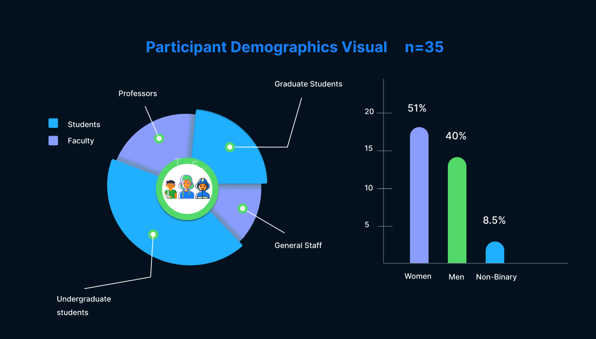
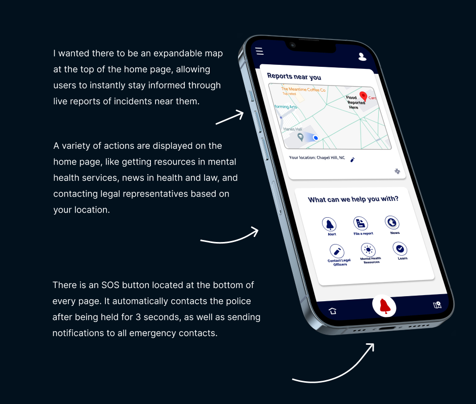
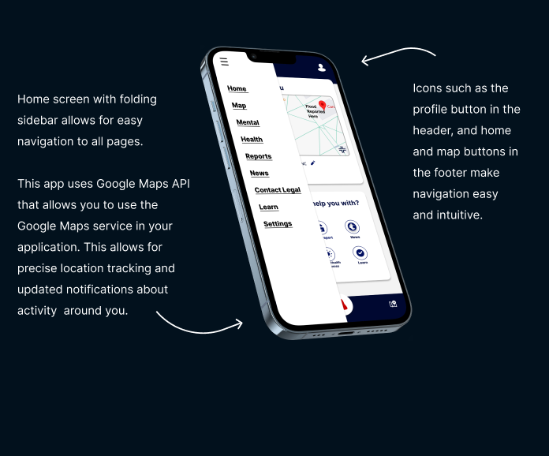
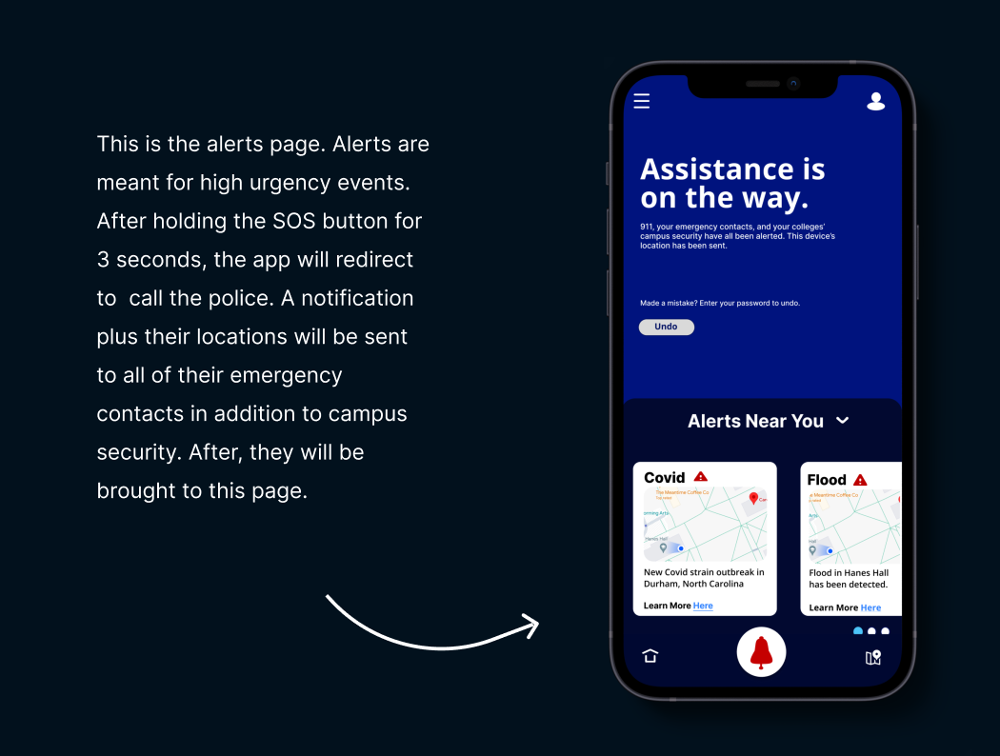
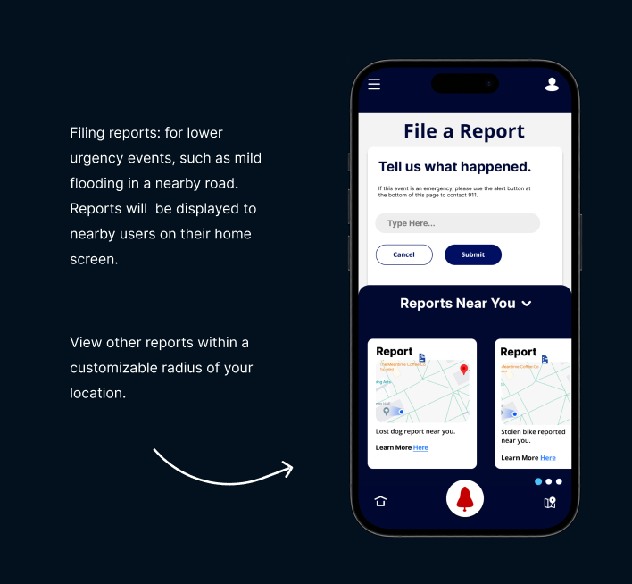
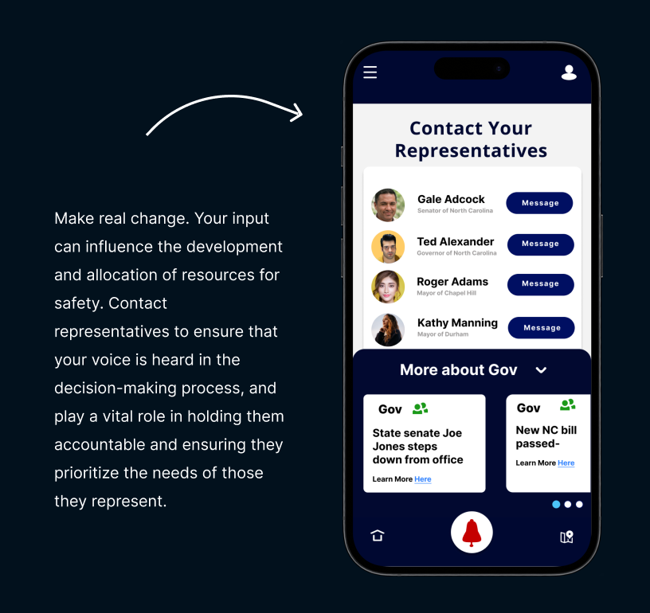
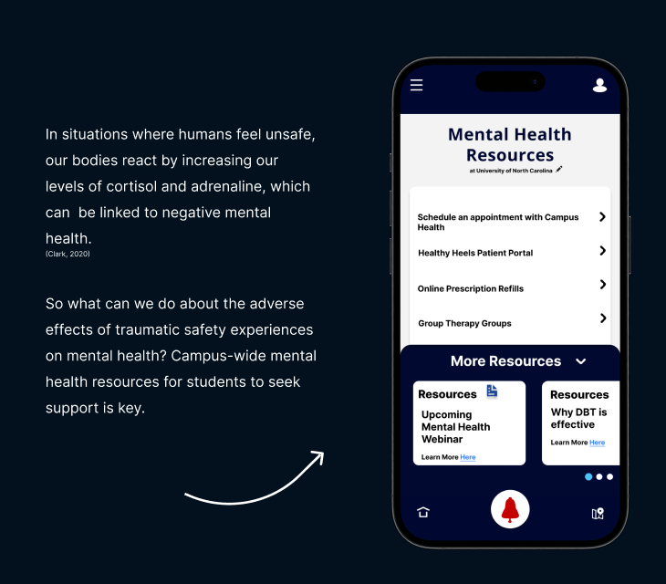
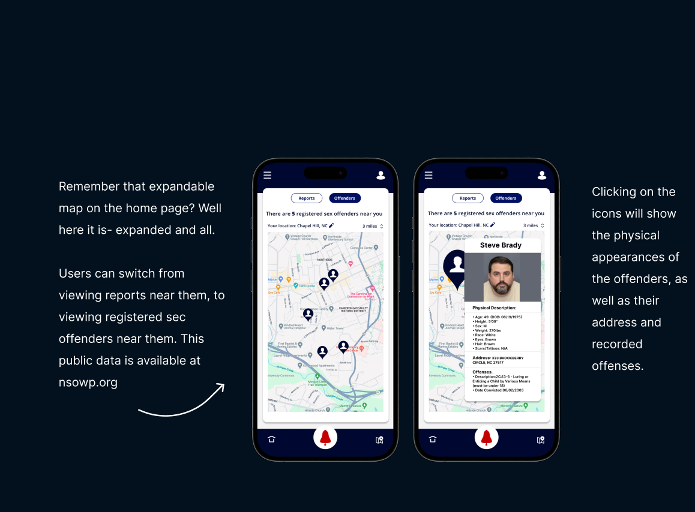

Project 1: College Safety App
Project Type: End-to-end app
Role: Solo UI/UX Designer
Industry: Safety
Tools: Figma, Figjam, Zoom, Miro
Duration: 5 weeks
The main idea of the app is to foster a safer and more informed campus community. I decided to create this application after realizing that many college campuses struggle to ensure the safety of their students. The current systems for communicating and responding to safety issues are unorganized, resulting in delays in emergency responses, a lack of awareness, and a feeling of insecurity among students. When there was a report of an armed individual on my campus, the school sent out an alert to all students. However, this alert had some flaws: not all students received it, and it didn't provide clear information about where the incident was happening. Also, a lot of professors and staff were unaware of what course of action to take, and what resources the school offered for a situation like this. This sparked the question in me: how can we make an alert software that is timely, accurate, and effectively addresses the safety concerns faced by students to help them feel more secure? More specifically, the issue at hand was that we need a comprehensive safety infrastructure that not only encompasses an effective alert software but also informs students about resources that the school has.
The issuewas that we didn't have a comprehensive safety infrastructure that not only encompasses an effective alert software but also informs students about resources that the school has. Upon interviewing a sample of 100 UNC and Duke students, I observed that almost no college students have installed a safety app that allows them to alert or be alerted of dangerous events on campus. Even after the events that transpired on UNC campus, many students felt unsure of how they would report, prepare, and inact change should their lives ever be in danger.
There currently do not exist many college specific apps for safety that unless they operate specifically with one particular university. Many public and private universities have what some refer to as blue boxes, which are tower like structures built sporadically around campus with a lit - up button that students can press if they feel unsafe. The button triggers a campus van to come and pick up the student at the location that they triggered the alert. While I think this policy is efficient for students who feel unsafe while walking home at night, it does not pose much use for students who don't know they exist (which is a lot apparently), are indoors, or cannot wait 20 minutes for a campus van.
Before touching the visual elements of design, I started off with white paper research. I found a study conducted in 2011 following a series of college crimes. In this study, over 600 staff and students were interviewed and shared their thoughts on campus safety. The analysis from the study indicated around 2/3 of participants rated the overall safety of the campus to be satisfactory, yet over two thirds of participants said they had no knowledge of security mirrors, inside and outside security cameras, and locks on classroom doors. So naturaly I began to wonder- are there any safety measures on my campus that I don't know about, and if so, how can I educate my peers about it?
I researched all of UNC's safety measures, and then I surveyed 24 UNC undergraduate students from various majors as well as around 11 staff. I broke the study down into three sections: the first section focused on beliefs about safety on campus. This section contained 6 items, requiring a response on a 1 to 5 point Likert scale where 1= strongly disagree to 5= strongly agree. An example of an item was "I feel safe in the classroom or laboratory." The second and third sections focused on attitudes about safety on campus and victimization on campus, respectively. Below is a visualization of the demographics of the those who participated in this study.
My results were as follows: Over two thirds of students disagreed or strongly disagreed with the statement “i feel safe in the classroom”, and almost 80% of students expressed dissatisfaction with the campus notification system for alerts. Over half of all participants reported not knowing or being unaware of locks on the classroom doors and the existence of phone trees, blue light boxes, and only one person knew of and installed UNC's Carolina ready safety app. The one participant who had the app installed stated that they "have it, but have never used it." My university already has several safety resources in place, but it doesn't do much good if not many people use them or even know they exist.
( Independent t-tests were computed to compare mean responses on each of these questions for students and faculty/staff. The results indicated that there were significant differences between the means for some items. For example {t (542) = 2.91,p < 0.O5), faculty/staff felt the new campus notification system was significantly more satisfactory (M = 2.91) than students (M = 2.79) )
Now it was time to decide what features I wanted to include in the app, features that students would actually use. I asked my trusty participants what features they thought were absolutley neccessaary, and which ones they would just like to see. A majority of participants wished to have an alert system, as well as a map of nearby incidents. I also wanted to include mental health resoruces as part of the app, since many UNC students were left with lingering feelings of anxiety.
When first approaching the design aspect, I experimented with different directions for the app interface. I considered color psychology as people tend to have strong associations with different colors and so I wanted each action service of the app to be differentiated in this way, with the most dire emergencies being associated with red, the color of alertness. Additionally, for the actual app interface. I looked at my competitors to see how they formatted their UI, how they structured their interface for the home screen, and considering all this, I made my first designs.
After testing my second iterations, I made the following changes: Added
      With the proposition of this app I hoped to provide a sense of security and ease within American collegiate communities. When a student's safety is one the line, it is of utmost importance that they be alerted as fast as possible, ad have an opportunity to quickly and quickly alert others. I also believe that the apps function to contact state representatives provides students with an easy way to send incident report statistics and ensure that a tragic event doesn't happen again, or at all. For many, this sense of security and safety isn't inherit, its a privilege, adn a luxury. Even though I worked very hard on this app, I truly hope one day its purpose wil be moot.